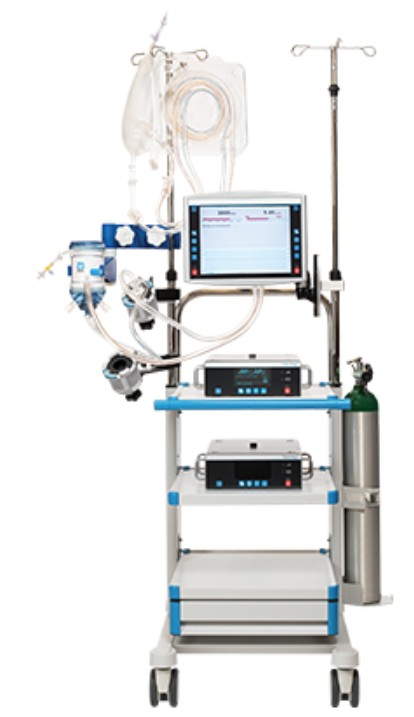
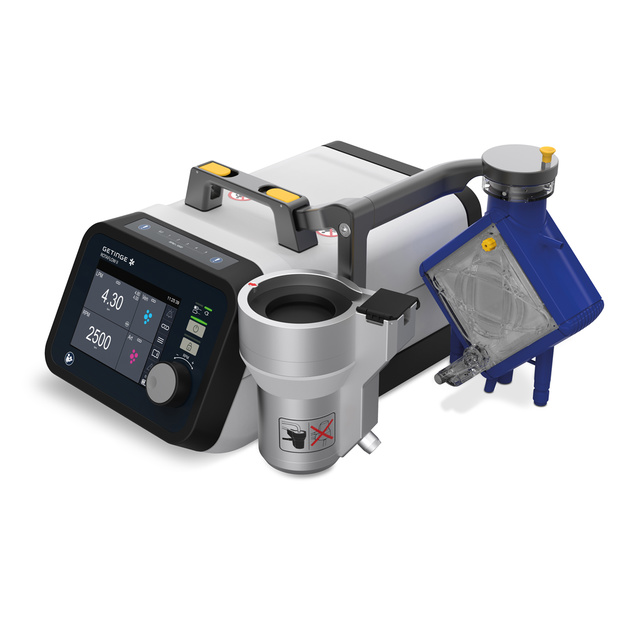
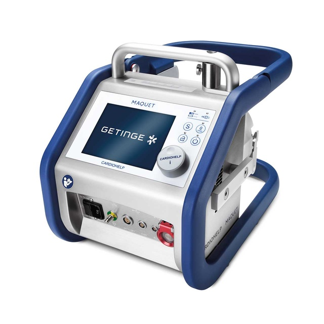
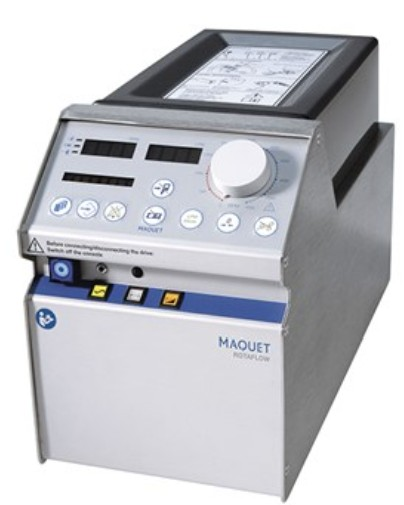
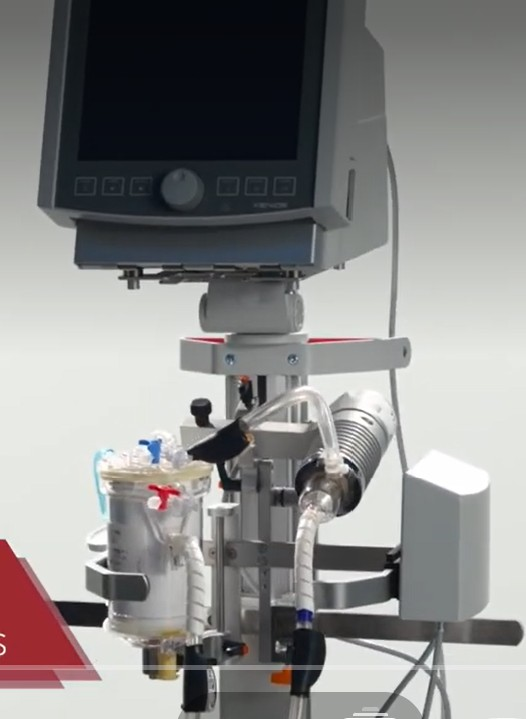
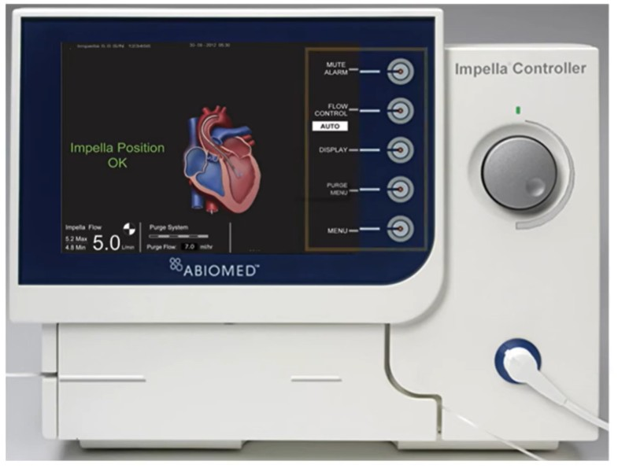

Nota editorial: La presente tabla se presenta en formato de alta legibilidad para capítulo médico y se ordena por arquitectura de bomba, soporte ventricular primario y perfil logístico de transporte, con el objetivo de facilitar la comparación entre plataformas desde una perspectiva tecnológica, clínica y operativa.
| Tipo de bomba | Soporte ventr. | Transporte | Sistema | Fabricante / Filial | País | Compatibilidad | Autonomía | VV | VA | ECMO híbrido | VAD completo |
|---|---|---|---|---|---|---|---|---|---|---|---|
| Centrífuga magnética | Sí | Limitado |
 |
Abbott | USA | CentriMagCircuito/plataforma específica del sistema | Corriente | Sí | Sí | Sí | Sí (LVAD/RVAD/BiVAD) |
| Sí | Sí |
Imagen no disponible |
Eurosets | Italia | Eurosets PMPOxigenador PMP compatible con la plataforma | 90 min | Sí | Sí | Sí | Sí (LVAD/RVAD) | |
| Centrífuga digital | Sí | Sí (intra/inter) |
 |
Getinge / Maquet | Suecia | HLS / QuadroxFamilia de oxigenadores/circuitos compatibles | 90 min | Sí | Sí | Sí | Sí (LVAD/RVAD) |
| No | Sí |
Imagen no disponible |
Medtronic | Irlanda | Affinity / PMPConfiguración con PMP según circuito | 60–90 min | Sí | Sí | Sí | No | |
| Centrífuga integrada HLS | No | Sí |
 |
Getinge / Maquet | Suecia | HLSMódulo integrado del ecosistema HLS | 90 min | Sí | Sí | Sí | No |
| Centrífuga alta velocidad | Sí | Sí (intra) |
 |
Getinge / Maquet | Suecia | HLS / QuadroxFamilia de oxigenadores/circuitos compatibles | Corriente | Sí | Sí | Sí | Sí (LVAD/RVAD) |
| Centrífuga | Sí | No |
Imagen no disponible |
Medtronic | Irlanda | Bio PumpCompatibilidad con consola y bomba Bio Pump | Corriente | Sí | Sí | Sí | Sí (LVAD/RVAD) |
| Centrífuga / rodillo | Sí | No |
Imagen no disponible |
LivaNova (Sorin) | Italia / UK | LivaNovaCompatibilidad con componentes de la plataforma | Corriente | Sí | Sí | Sí | Sí (según configuración) |
| Membrana / pumpless (según modelo) | No | Limitado |
 |
Fresenius | Alemania | XeniosCompatibilidad dependiente del sistema Xenios | — | Sí (pumpless) | No | No | No |
| Microbomba axial | Sí (descarga directa) | Sí |
 |
Abiomed | USA | Catéteres ImpellaInterfaz dedicada propia del sistema | — | No | No | No | Sí (LVAD parcial) |